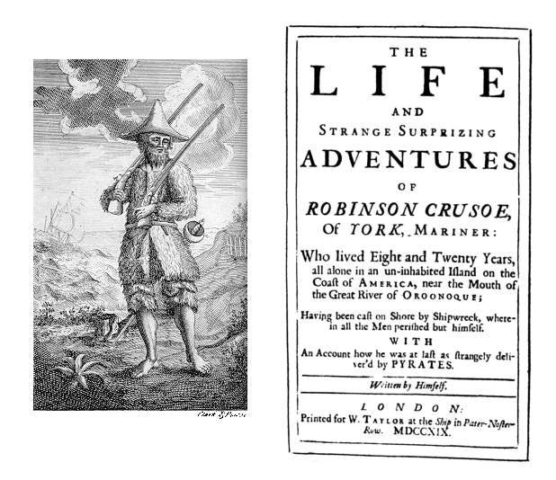
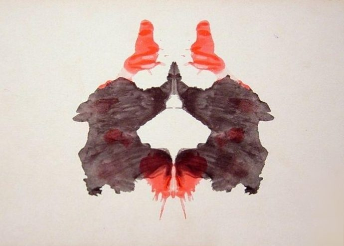

读之前
这一页是报告 9：4 月 1 日到 18 日，十三条，手术后的第四到第六个星期。前几条还有不少错字，往后读会发现文字在几天之内变了样，先别急，留意是哪一天、哪一样先变。读的时候抓两条线：一条是查理学会的东西（揉面机、标点、读书、测验），一条是他开始重新看的东西（面包店里的朋友、小时候的事）。
32 岁，在唐纳面包店打杂了十七年。3 月初做了手术，头两个星期什么变化也感觉不到，3 月 29 日第一次在迷宫上赢了 Algernon。夜里开着 Nemur 给的「电视」睡觉，开始做梦、想起家里的事，开始去 Strauss 那里做谈话治疗。拼写还错得多，几乎没有标点。他相信面包店的人都是他的好朋友。
读的时候带着这几个问题。不用先找答案，读完回来对照「检查一下理解」。
4 月 1 日面包店里，谁在起哄，谁在拦？唐纳先生最后为什么那样决定？§1
查理的文字从哪一天开始变样？最先变的是拼写、标点，还是别的？§4–§6
留意查理每次写到别人笑的时候，他自己在做什么、怎么理解那笑。§1 §7 §13
4 月 18 日的墨迹测验，和报告 2 里那一次对照着读：变的是卡片、测验的人，还是查理？§13
分节地图
这一页有十三条带日期的报告。读完一条打个勾；每条下面的英文是那一条开头的几个词，在 Kindle 里搜它就能跳过去。没读的那几行先模糊着，免得提前看到情节，点一下就能看清。全页约 6900 词，分三次坐下读。
第一次坐下§1–§7 · 约 2600 词 · 4 月 1 日到 10 日，面包店、逗号、一场派对
4 月 1 日约 800 词 Everbody in the bakery came to … 留意每个人说的话：谁在起哄，谁在拦，唐纳先生怎么收场。 4 月 3 日约 20 词 Finished Robinson Crusoe. I want to … 只有三句。留意最后那个全大写的词。 4 月 4 日约 500 词 Miss Kinnian says Im learning fast. … 留意 Miss Kinnian 读完报告后的样子，和查理接着想起的事。 4 月 6 日约 100 词 Today, I learned, the comma, this … 刚学会逗号的一天。别跳过，数一数逗号。 4 月 7 日约 200 词 I used the comma wrong. Its … 留意他怎么理解老师说的「混着用」。 4 月 8 日约 200 词 What a dope I am! I … 一夜之间。留意撇号和引号从哪里开始出现。 4 月 10 日约 800 词 I feel sick. Not like for … Joe 和 Frank 请他去的派对。留意查理怎么写别人的笑。 第二次坐下§8–§11 · 约 1900 词 · 没去上班的几天，一段回忆、一次谈话、几本书
4 月 13 日约 1000 词 Still didn’t go back to work … 后半段换了人称：留意「我」从哪一句起变成了「他」。 4 月 14 日约 500 词 Dr. Strauss says the important thing … 第一次知道 Strauss 是什么医生。留意他说的智力和感情。 4 月 15 日约 100 词 I’m reading a lot these days … 一星期读的书。留意 Strauss 不让他读什么、为什么。 4 月 16 日约 300 词 I feel a lot better today, … 三个人对「智商」的三种说法，查理自己的疑问。 第三次坐下§12–§13 · 约 2500 词 · 一个噩梦，和第二次墨迹测验
4 月 17 日约 1500 词 I had a nightmare last night, … 留意梦里的东西怎么一个接一个连到一件旧事上。 4 月 18 日约 1000 词 I found out what a Rorschach … 和报告 2 那次测验对照着读。
背景：书里默认你知道的事
按在书里出现的顺序排，标题前是节号。人名后面括号里是中译本的译名，读者想对照译本时用。
§1 面包店里的人唐纳面包店（Donner’s Bakery）在纽约，前面是店面，后面是烤面包的作坊。查理在这里扫地、送货、倒垃圾、洗厕所；揉面机是有手艺的活，书里说管机器的 Oliver 上过一年面包师学校。这一条里出场的人多，下面几张卡片只写你此刻已经知道的。
Mr. Donner 唐纳先生 店主。报告 8 里说，十七年前是查理的 Uncle Herman 把他领来的，Herman 是唐纳的好朋友。
Gimpy 金皮 面包师傅的头儿，走路一瘸一拐。gimpy 在美国俚语里就是「瘸腿的」，这是个外号。
Joe Carp、Frank Reilly 乔·卡普、弗兰克·赖利 作坊里的同事，查理心里最好的朋友。报告 8 里带他去 Halloran’s 酒吧的就是他们。
Fanny Birden 范妮·比尔当 作坊里的女同事。
Oliver、Bernie Bate 奥利弗、伯尼·贝特 Oliver 原来管揉面机；Bernie 在机器上打下手。
§1 愚人节4 月 1 日是愚人节（April Fools’ Day），美国人这天互相开恶作剧玩笑，上了当的人被叫作 April fool。这一条里好几个人嘴里都挂着这个节：要读懂他们的话，先得知道这一天人人都可能在耍人，也都提防着被耍。
§2 《鲁滨孙漂流记》笛福（Daniel Defoe）1719 年出版的小说，写一个水手流落荒岛、在岛上活了二十八年的故事，后来常被改写成儿童读物和简写本。报告 8 里 Miss Kinnian 已经让查理读起这本书。查理读完问「为什么」没有下文：其实笛福同一年就出了续集《鲁滨孙漂流续记》（The Farther Adventures of Robinson Crusoe），写他离岛以后的事。

1719 年初版的卷首插图和书名页。书名页上写着「独自在一座无人荒岛上生活了二十八年」。画者不详，Clark & Pine 雕版，公有领域，维基共享资源 §6 夜里开着的「电视」报告 8 里 Nemur 给查理一台「不是电视的电视」，让他睡觉时开着，屏幕上闪画面、喇叭里念东西。这是当时流行的「睡眠学习」（sleep-learning）想法：睡着时听录音，醒来就记住了。1950 年代美国有卖给普通人的睡眠学习录音课程；赫胥黎（Aldous Huxley）1932 年的小说《美丽新世界》里也写过睡眠教学。书里这台机器是虚构的。它到底有没有用，见读后部分的「对照今天」。
§9 精神科医生和谈话治疗Strauss 既是精神科医生（psychiatrist），又是神经外科医生（neurosurgeon）。前者看精神和情绪的问题，后者给脑和神经做手术，现实里很少由一个人兼任，这是小说的设定。报告 8 里他让查理躺在沙发上，想到什么说什么，这是精神分析式的谈话治疗，源自弗洛伊德（Sigmund Freud）。§12 的「自由联想」（free association）也是它的基本方法：放任念头一个接一个冒出来，从里面找被压下去的记忆。1950–60 年代，精神分析在美国精神医学里影响很大。
§10 查理一星期读的三本小说《了不起的盖茨比》（The Great Gatsby，菲茨杰拉德，1925）、《美国的悲剧》（An American Tragedy，德莱塞，1925）、《天使，望故乡》（Look Homeward, Angel，托马斯·沃尔夫，1929），都是 1920 年代的美国小说，写的都是年轻人的欲望、出身和阶层，想离开自己原来的位置，书里都有当时算出格的男女关系。查理说他以前不知道男女之间有这种事，指的就是这个。对一个刚学会逗号十来天的人，这是很重的书单。
§11 智商（I.Q.）智商测验给出的是你在同龄人里的位置：平均定为 100，常用量表每 15 分是一个标准差，约三分之二的人在 85 到 115 之间，130 以上约占 2%，150 以上大约两千多人里才有一个。报告 5 里查理是 68，§11 他自己说是 70。书里 Nemur、Strauss、Burt 三个人对智商是什么各有说法，读的时候留意他们谁也没说服谁。
70 85 100
115 130 150
约三分之二的人 在 85–115 之间
查理手术前 68
两千多人里一个
智商（平均 100，标准差 15）
本站示意图：智商分数在人群里的分布，按平均 100、标准差 15 的正态分布画。只是示意，不是书里的数据。 §13 罗夏墨迹测验瑞士精神科医生罗夏（Hermann Rorschach）1921 年发表的测验：十张左右对称的墨迹卡片，五张黑灰色，两张黑色加红色，三张彩色。施测的人先问「这可能是什么」，看你怎么看：用整张还是一角，看形状还是颜色，看出什么。§13 结尾那串记号就是计分：W 用了整张，D、Dd 用了常见、少见的局部，S 用了白色空处，F 是按形状看，+ 和 − 是形状看得准不准，A 是动物，Ad 是动物的一部分，obj 是物体，orig 是少见的独创回答。各家计分体系写法略有不同。

罗夏测验的第二张卡片，黑色和红色。报告 2 里查理说卡片上洒的是「红的黑的」墨水。Hermann Rorschach，公有领域，维基共享资源 词与短语
三类：紫边的「查理拼的」是他拼错的词，先写还原的拼法；黄边的「每个字都认识」是熟词生义、俚语、别人话里的弦外之音；其余是这里用法特别的词。斜体小字是原句里的几个词，在 Kindle 里搜它就能找到原文，拼错的照拼错的抄。
§1 4 月 1 日
laff
… they were laff laughing and Frank …
laughing 在笑
原书里 laff 后面紧跟着斜体的 laughing：查理写完看出不对，当场改了，旧的那个留在纸上。这一条里还有 enuff → enough。这种「写错、跟上改正」报告 7、8 里偶尔出现过（progris → progress），这一条里一下就有两处。
April Fools’ Day
… its April fools day and if …
愚人节
见「背景」。查理写成 April fools day，同一条后面又写成 April Fools day。他这时候大小写还很随意。
exited
… Fanny Birden got exited because she …
excited 激动
少了一个 c，恰好拼成了另一个真词 exited（离开了），所以 Kindle 长按查到的是错的意思。这一条里出现了两次。
get sore at
… he got sore at me for working …
生（某人的）气
sore 本义是「疼」，美国口语里是「恼火」。这一页查理用了好几次（§13 也有）。
play someone for a fool
… They were playing him for an …
把某人当傻子耍
原句是 playing him for an April Fool joke，把固定说法 play someone for a fool 和愚人节揉在了一起。看上下文是 Fanny 对 Gimpy 说的话，查理照样记了下来。
What’s the catch?
… playing on me. Whats the catch.
这里头有什么名堂？
catch 在这里是「暗藏的圈套、附带的条件」。唐纳先生的问句，查理没有加问号。
gag
… it was some kind of a gag.
恶作剧，玩笑
gag 本义是「堵嘴的东西」，口语里是「笑料、整人的把戏」。
peculier
… there is something peculier lately about …
peculiar 古怪的
照读音拼，词尾该是 -iar。是 Frank 的话：他早就觉得查理最近不对劲。
advance
… a man who dont want to advance.
（工作上）往上走，升迁
advance 常见的意思是「前进、预付」。查理不懂，唐纳先生给的解释是「从今天起你管揉面机，这就叫 advance」。后面查理把这句话原样学了一遍。
backfire
… the joke backfired and made them …
（玩笑、计划）反倒伤了自己
本义是枪炮或发动机「回火」。Fanny 的话，后半句自己就解释了：被耍的成了他们。
go jump in the lake
… said go jump in the lake.
滚一边去
不客气地打发人走，不是真叫人跳湖。查理问 Joe 那个玩笑是怎么回事，得到的就是这句。
§3 4 月 4 日
get something in one’s eye
… Then she got something in her …
（字面）眼睛里进了东西
查理照字面记下：她眼睛里进了东西，跑去了洗手间。这常是忍不住要掉泪时的说法；读者看得出这是什么场面，他看不出。记住这个说法，§7 还会出现一次。
§5 4 月 7 日
mix them up
… She said; You, got. to-mix?them!up: …
（标点）要换着用
Miss Kinnian 的意思是：句号、逗号、问号……各有各的用处，写的时候要搭配着用。查理理解成「把它们混在一起」，于是什么标点都往上放。译本：「你，把！一切，都%搞。混？了」。读成了批评他把标点搞混；原文下一句是她示范怎么混着用，译本略掉了这一句。
Dear Miss Kinnian:
… about, Dear Miss Kinnian: (thats, the way? …
亲爱的 Kinnian 小姐：
他在举冒号的例子：商务信件的称呼后面用冒号（私人信件用逗号）。例子偏偏选了这一句，又说喜欢她「我一问，她总给我一个理由」。
§6 4 月 8 日
dope
… What a dope I am! I …
笨蛋
dope 也指毒品、内幕消息，这里是口语的「傻瓜」。查理第一次用这个词说自己，口气是自嘲。
plateau
… She said I reached a plateau.
高原；（学习上的）平台期
紧跟着查理的解释是「像山顶的一片平地」：爬上来了，到了一块平地。学习上它常指进步暂时停住的平台期，Miss Kinnian 指的是哪一层，原文没说。原文 plateau 是斜体，像是查理刚学到的新词。
photostat
… after they’re photostated—to see your own …
（用照相式复印机）复印
Photostat 本是一种照相式复印机的商标，后来泛指这样复印。报告 7 里写成 fo-tastats。
come along
… You’re coming along fast, Charlie.
进步，进展
不是「一起来」。Miss Kinnian 的话。
§7 4 月 10 日
like he had something in his eye
… like he had something in his eye.
像眼睛里进了东西似的（使眼色）
和 §3 写 Miss Kinnian 的是同一个说法，这一回是 Joe 冲 Ellen 挤眼睛，查理自己也写了 winked。同一个说法放在两件很不一样的事上，可以对照着读。
a scream
… “He’s a scream,” one of the …
逗死人的家伙
scream 本义是尖叫，口语里指「让人笑得尖叫的人或事」。
side show
… He’s a one man side show.
一个人的杂耍棚
side show 是马戏团大帐篷外的附属表演，旧时常展示「怪人」供人围观。这个比方很刻薄。
wax fruit
… to eat wax fruit?
蜡做的假水果
当时美国人家里常摆在果盘里当装饰。
ditch
… that night we ditched him at Halloran’s.
甩掉，扔下（某人）
ditch 本义是沟渠。Halloran’s 就是报告 8 里 3 月 28 日那家酒吧。
be IT
… hide-and-go-seek and I was IT.
（捉迷藏里）当「鬼」，负责找人的那个
儿童游戏的说法，全大写的 IT。
get someone worked up
… Ellen sure got him worked up.
把人撩得激动起来
work up 是「激起情绪」，这里说的是性方面的。
pull a Charlie Gordon
… they say “to pull a Charlie Gordon.”
干了件查理·戈登式的蠢事
pull a + 人名，是「做出某人才会做的那种事」。报告 8 里面包店的人说 He really pulled a Charlie Gordon，查理跟着笑。查理的名字在他们嘴里就是「蠢」的代称。译本：「去整查理·高登」。这样译成了别人去捉弄查理；原文的意思是做出像查理那样的蠢事。报告 8 里 He really pulled a Charlie Gordon 那一处译本也是这样处理的。
§8 4 月 13 日
pushcart
… a baby carriage made into a pushcart …
小贩的手推车
这里是拿婴儿车改的，上面架着炭炉烤栗子。纽约街头冬天常见的小贩。
fat head
… Charlie! Charlie!...fat head barley!
呆子
孩子们编的顺口溜，barley（大麦）押 Charlie 的韵，没有意思。译本：「呆头麦粒」。「呆头」和粮食都保住了，韵没法保。
shoot craps
… Want to shoot some craps?
掷骰子赌钱
craps 是街头常见的骰子赌博，shoot 是「掷」。
skid
… the bundle on one of the skids.
（垫在货物下面的）木托板
不是「打滑」。作坊里放货的架子或托板。
§9 4 月 14 日
outstrip
… growth is going to outstrip your emotional growth.
跑到……前面，超过
Strauss 的预言：智力会长得比感情快。这句话值得记住。
§12 4 月 17 日
free-associate
… I free-associated the way Dr. …
自由联想
见「背景」§9。后面那一串用省略号连着的词，就是他自由联想的记录。
lace valentine
… they turn into lace valentines with …
带蕾丝花边的情人节卡片
美国孩子情人节互送的卡片，常做成心形、镶纸花边。
composishuns
… as I write my composishuns compositions.
compositions 作文
自由联想里他回到了成人班上写作文，拼法也跟着回到了从前，紧跟着又用斜体改正。
P.S. 13
… School changes into P.S. 13 and …
第 13 公立小学
纽约的公立学校按编号叫，P.S. 是 Public School。后面的 P.S. 222 也一样。译本：「十三学区」。P.S. 13 是一所学校的编号，不是学区。
ringo-levio
… or kick-the-can, or ringo-levio than …
一种分两队抓人、救人的街头游戏
也拼作 ringolevio、ring-a-levio，纽约街头孩子常玩；kick-the-can（踢罐子）是另一种捉迷藏式的游戏。
valentime
… gonna give Harriet a valentime too.
valentine（孩子说走了音） 情人节卡片（礼物）
这回不是写错，是十一岁的查理说错：n 说成了 m。别的孩子学他也这样说。译本：「情人卡」。孩子的错读在译文里没有了。
knock someone’s eyes out
… this will knock her eyes out.
让人看得目瞪口呆
口语里是「让人看呆了」，通常是夸。Hymie 边写边笑着说，查理只听出了夸的意思。
fanny
… his seat and wiggles his fanny.
屁股
美国口语，较委婉；在英国英语里是粗话，意思也不同。
degenerate
… kid sister, you degenerate.
下流坯
作形容词是「退化的」，作名词骂人，指道德败坏、性方面下流的人。
get a licking
… Charlie got a licking!
挨了一顿揍
licking 不是「舔」，是「痛打、惨败」。
§13 4 月 18 日
administer (a test)
… the same each time it’s administered.
施测，主持（测验）
administer 常见的意思是「管理」。测验要标准化：每次说同样的话、按同样的步骤。这是 Burt 的解释。
I’ll believe that when I hear it
… I’ll believe that when I hear it.
我听到了才信
查理回 Burt 的话。套的是 I’ll believe it when I see it（眼见为实），把「看」换成了「听」，因为接下来要放录音。口气是挑衅的。
查理的文字
这一页是全书曲线最陡的一段。报告 8 的拼错率还在一成上下，4 月 1 日降到 3% 左右，4 月 8 日以后几乎是零。4 月 1 日已经能看到苗头：laff 后面紧跟着斜体的 laughing，enuff 后面跟着 enough，他自己看出错了，当场改，旧的那个还留在纸上。
切到「标点」：4 月 6 日之前几乎是零，4 月 6 日冲到顶（每百词六十个逗号，一整条没有句号，所以「句长」也冲顶），4 月 7 日什么标点都往上放，4 月 8 日回到正常，撇号也是这一天开始用对的：dont 变成了 didn’t。三天里，标点从不用、到乱用、到会用。4 月 17 日自由联想时又冒出一个 composishuns，马上改成 compositions：回到成人班的查理还是旧的拼法。译本：「都%搞。混？了」。4 月 7 日这一条译本加进了 %、&、$、#、@ 这类原文没有的符号；原文用的全是真标点，只是放错了地方。
记忆拼图
查理的童年是一段一段想起来的。每段一张卡片：想起了什么，是被眼前的什么勾起来的。年纪是从书里推的，推不出来的写「年纪不详」。读过的页的卡片会汇总到记忆拼图 ，按年纪排好。
妹妹出生，妈妈打了他 妈妈去医院带回一个妹妹。婴儿夜里哭，查理去抱她，想像妈妈那样哄她，妈妈冲进来把他打倒在床上：「不许你再碰她。」是 Miss Kinnian 说他是好人、他想起妈妈教他对人友善时勾出来的。
§3 捉迷藏里一直当「鬼」 小时候街坊的孩子让他一起玩捉迷藏，他当「鬼」，在手指上数到十，一遍又一遍，找到天黑变冷也没找到人，只好回家，一直不知道为什么。是派对上有人提起 Halloran’s 那一晚时勾起来的。
§7 刚到唐纳面包店的那个冬天 下雪，圣诞前后。一个瘦小子背着一捆纸袋，看不懂店招，盯着小贩的发条玩具；孩子们围着喊 fat head barley；门洞里的男孩让他想起一身脏污回家、Uncle Herman 拎着锤子出门找人；在作坊里打盹，被人一脚踢倒。是一天早上醒来，「脑子里的墙开了个洞」。
§8 给 Harriet 的情人节礼物 P.S. 13，十一岁。他把捡来的金色心形小盒包好，请 Hymie 在包装纸上替他写几句话，挂在 Harriet 家门把手上。第二天 Harriet 不理他，她的两个哥哥在校园里把他打得流血，后来他被转到 P.S. 222。是梦见 Miss Kinnian 读他的报告、自由联想时勾起来的。
§12
32 岁 4 月的现在
4/4
4/10
4/13
4/17
15 岁 11 岁 更小 年纪不详 妹妹出生
捉迷藏
刚到面包店
情人节
本站示意图：这一页的现在（上面的线）和查理想起的年纪（下面三条线）。想起的顺序和发生的顺序不一样。 值得停下来的句子
Boy, did I have crazy spelling and punctuation!— §6，4 月 8 日，查理把旧报告从头读了一遍。本站译：天哪，我以前的拼写和标点可真够乱的！
Boy 是感叹词，did I have 是口语里表示感叹的倒装（「我可真是……」）。查理站到了外面看自己：他读的正是读者读过的那几篇。这一句本身拼写、标点全对，和它评论的那些报告放在一起，就是这一页的曲线。他想把旧报告改对，Miss Kinnian 不让：Nemur 要原样留着。
I had reached a new level, and anger and suspicion were my first reactions to the world around me.— §13，4 月 18 日，听录音之前那一刻。本站译：我到了一个新的层次，而我对周围世界最先有的反应，是愤怒和猜疑。
had reached 是过去完成时：在看懂那个眼色的一刻，他意识到自己已经到了新的层次。他给自己的变化下了一个冷静的结论，口气像实验记录（a new level），内容却是愤怒和猜疑。对照 §9 Strauss 说的「智力会跑在感情前面」：智力往上走，最先长出来的不是快乐。
读完想一想
1. 4 月 10 日之前，查理不知道别人在笑他，他觉得自己有很多朋友。知道了以后，他说「我觉得羞耻」，又说「知道了是好事」。你觉得他是变得更好了，还是只是变得更难受了？
本站的看法 两样都是。查理自己在 4 月 13 日说，知道大家笑他是好事，他也想明白了他们为什么笑；可同一页里他也第一次故意不去上班、第一次发那么大的火。小说没有替读者回答「蒙在鼓里的快乐」值不值得保留，它让查理一边变聪明一边失去这种快乐。可以留着这个问题往后读。
2. 查理想把旧报告的错改掉，Miss Kinnian 说 Nemur 要原样留着「看你的进步」。一个人写错的字成了实验数据，你怎么看？
本站的看法 站在实验这一边，原始记录不能改，这是科学的规矩；站在查理这一边，那是他的文字，他想让它体面一点。书里的说法很巧：Miss Kinnian 说留着是为了让他看见自己的进步。这一页里查理还会说，知道别人在读自己的报告，越来越难写下真心话。谁有权读、谁有权改一个人的记录，后面还会反复出现。
3. Strauss 说智力会长得比感情快。这一页里，查理变聪明以后，最先多出来的是什么？
本站的看法 羞耻、猜疑、愤怒，还有对女人的困惑。他学会了标点、读了一星期的小说，可面对派对、墨迹卡和录音时，他像一个第一次看清自己被人欺负的孩子，而且自己也知道。4 月 18 日他把这叫作「到了一个新的层次」。这句话的冷静和它的内容之间的距离，就是 Strauss 预言的那道差。
对照今天
成立 后来的事实印证了这个说法部分成立 一部分对，一部分被后来的事改了被改写 后来的事实推翻了它，或者完全变了样书里的说法：夜里开着的「电视」帮查理学会了标点（Miss Kinnian，§6）
书里 查理前一晚读了语法书，半夜醒来一下子想通了。Miss Kinnian 说，是他刚睡着和夜里一直开着的那台机器帮了忙。
当时 睡眠学习在 1950 年代很流行，也已经有人检验：Simon 和 Emmons 1956 年用脑电图确认受试者真的睡着以后再放问答录音，醒来几乎什么也记不住。
今天 睡着时直接学会新知识、醒后能说出来，至今证据很弱；少数实验发现，睡着的人能学会很简单的东西：把一种气味和一个声音联系起来，或记住反复听到的一段噪声（只在浅睡和快速眼动睡眠时成立，深睡时反而记得更差），离学会语法很远。另一方面，睡眠帮助巩固醒着时学过的东西，这一点证据很多。查理的经历更像后者：白天读了，夜里理顺了。核对于 2026-10。依据：Simon & Emmons（1956），Arzi 等人在 Nature Neuroscience 的论文（2012），Andrillon 等人在 Nature Communications 的论文（2017）。
书里的说法：智商测的东西很杂，包括已经学过的，不是衡量智力的好尺度（Burt Selden，§11）
书里 Nemur 说智商像药店的秤，Strauss 说像量杯上的刻度，Burt 说他们都不对：智商测的东西很多，包括已经学过的，不是衡量智力的好办法。
当时 美国常用的个人智力测验是斯坦福-比奈量表和韦氏量表，平均分定为 100。书里就拿智商数字给查理的变化打分。
今天 两边都有道理。智商分数相当稳定，能预测学业和工作表现，是心理学里最可靠的测量之一；但它确实受教育和环境影响：20 世纪许多国家的平均分每十年涨约 3 分（弗林效应），人群的基因没变这么快。诊断智力障碍现在也不只看分数：美国精神医学学会的 DSM-5（2013）要求同时看适应能力，严重程度按适应能力来分。核对于 2026-10。依据：Flynn（1987），美国精神医学学会 DSM-5（2013）。
检查一下理解
先在心里答，再点开。答错的那题，回书里把对应那一条再读一遍。
1.（§1）大家为什么起哄让查理去开揉面机？为什么说「玩笑砸了」？ Frank 说今天是愚人节，查理要是把机器弄坏了，大家就能放一天假。结果查理开得比 Oliver 还好，涨了工资，想放假的人没放成，被耍的成了他们自己。
2.（§5）4 月 7 日这一条为什么满纸乱放标点？ Miss Kinnian 说标点要「mix them up」，意思是搭配着用；查理理解成把各种标点混在一起用，于是什么都往上放。第二天他读了语法书才明白。
3.（§7）Joe 说的「在 Halloran’s 把他甩掉的那晚」是哪件事？ 报告 8 里 3 月 28 日：Joe 和 Frank 带查理去 Halloran’s 酒吧，让他去街角看看下没下雨，回来人都走了，他迷了路；房东 Flynn 太太说是一位警察送他回家的。当时查理以为他们去找他了。
4.（§8）4 月 13 日那段回忆为什么从「我」换成了「他」？ 查理是在看从前的自己，像看另一个人：他说透过那个少年的眼睛读不懂店招上的字，「我想那个满脸害怕的家伙就是我」。往后的回忆里，他常这样称呼小时候的自己。
5.（§11）Nemur、Strauss、Burt 各怎么说智商？ Nemur：像药店的秤称体重，量的是你有多聪明。Strauss：像量杯上的刻度，说明能装多少，还得往里装东西。Burt：它测的东西很杂，包括已经学过的，不是好尺度。
6.（§13）查理为什么在第二次墨迹测验时发火？听完录音他明白了什么？ 他记得上次 Burt 说卡片里藏着图、人人都看得见，以为自己被耍了。放录音之前，他先看懂了 Burt 和 Nemur 交换的眼色：他们不是在笑他。录音里 Burt 的话和这次几乎一样，是他当时理解错了。
用一句话说这一页：
精彩回顾
隔几周回来，先看这几张卡片。想不起来的那张，点节号回到这一页，再回书里那一条。
一句话： 查理学会了标点，也看懂了别人的笑，最先长出来的是羞耻和怒气。
Thats advance 愚人节被推去开揉面机，结果开得比原来管机器的 Oliver 还好。唐纳先生给他涨了工资，解释说管机器就叫 advance。想放假的人没放成。
§1 逗号满天飞 4 月 6 日刚学会逗号，差不多每一两个词就点一个；第二天什么标点都往上放；第三天读了语法书，一夜之间全会了。
§4–§6 to pull a Charlie Gordon 派对上的人围着看他跌倒、啃蜡做的苹果。他终于懂了面包店里那句话的意思：他的名字就是「蠢」。
§7 读不懂店招的少年 醒来时「脑子里的墙开了个洞」，他看见十五岁的自己站在唐纳面包店门口，透过那双眼睛，招牌上的字还是认不出来。
§8 金色的心形小盒 十一岁，把捡来的金色心形小盒当情人节礼物送给 Harriet，上面的话是请别人替他写的。换来的是一顿打和一次转学。盒子再也没要回来。
§12 录音机里的自己 他以为 Burt 上回骗他说卡片里有图，听了录音才知道是自己听错了。「那真的是我吗？」
§13